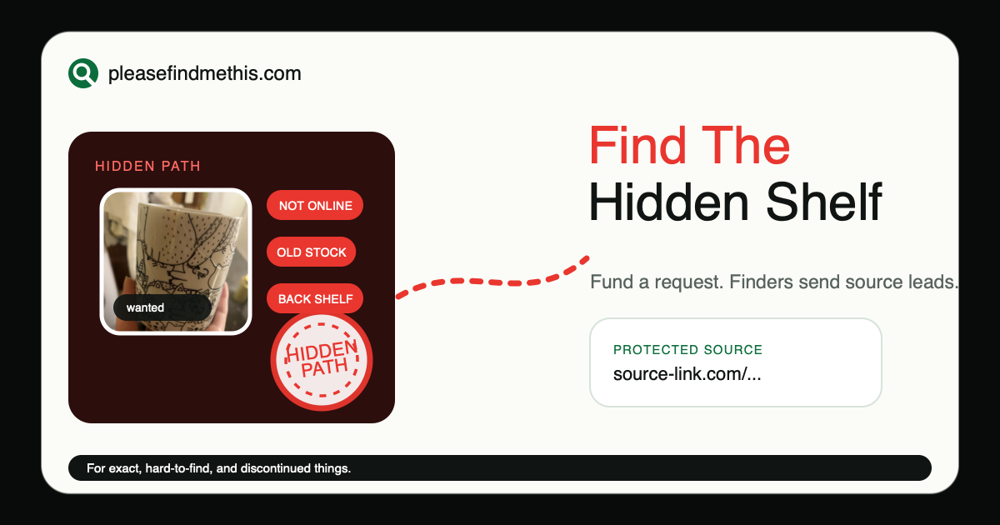
11. Hidden Shelf Trail
Curiosity and scarcity: the item may exist outside normal search.
Simple red-led share-card directions based on the Hidden Path and Not Inventory winners.

Curiosity and scarcity: the item may exist outside normal search.
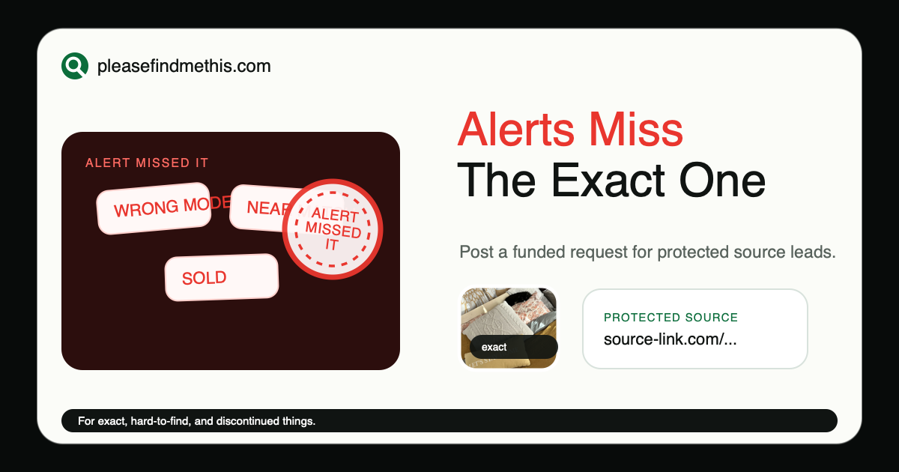
Alert fatigue: saved searches keep sending near matches.
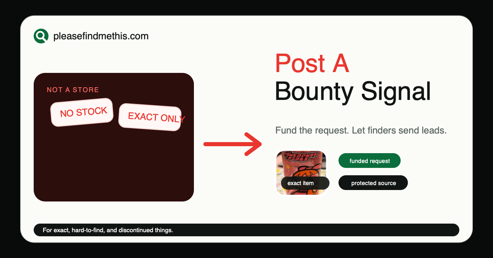
Category correction: this is a signal for finders, not a store.
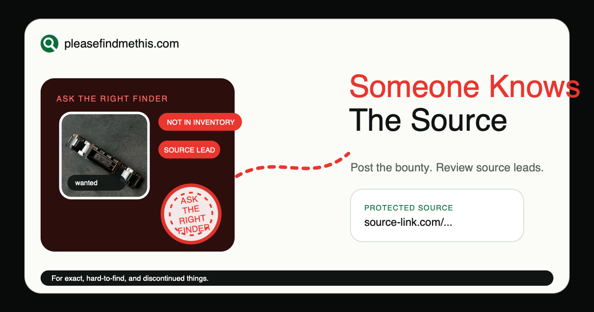
Information gap: the right clue may be in someone's network.
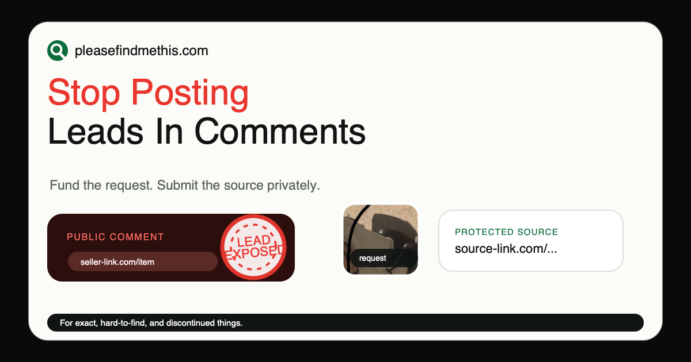
Loss aversion for finders: do not leak a useful lead.
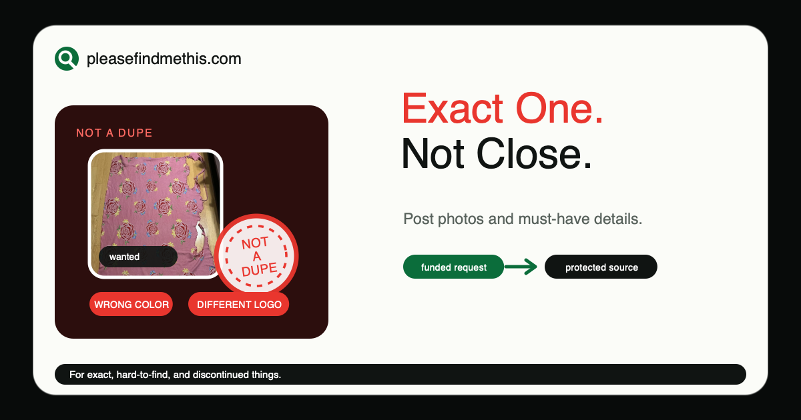
Contrast bias: close enough still feels wrong.
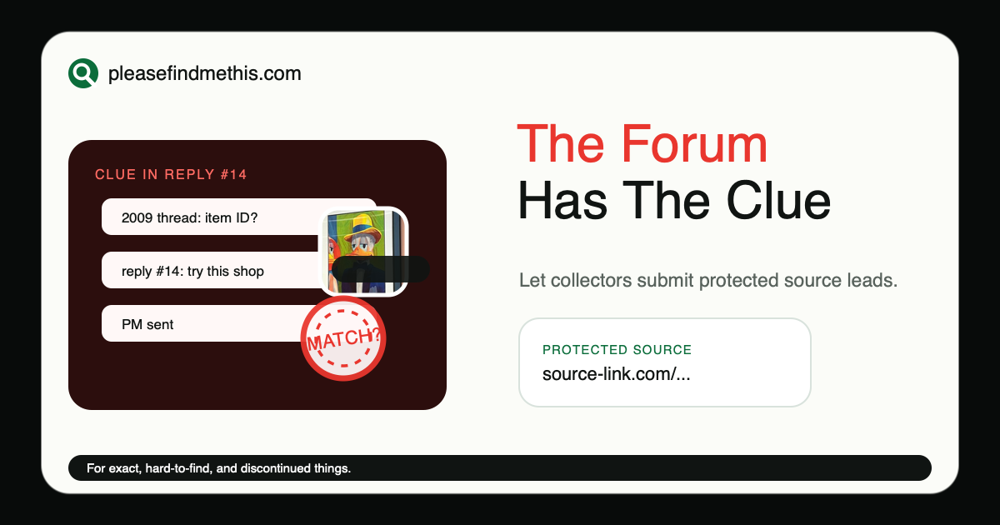
Insider access: old community threads can hold clues.
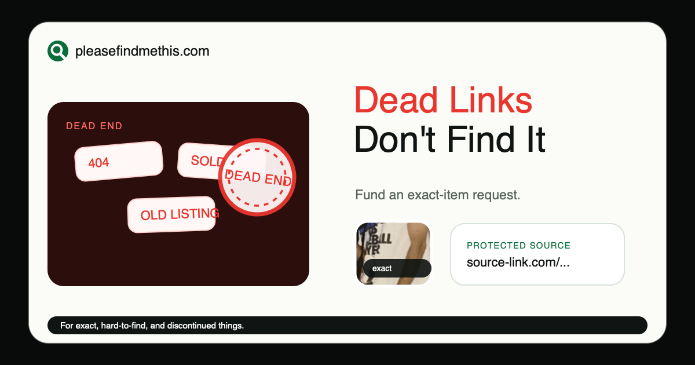
Search frustration: old results and sold listings waste time.
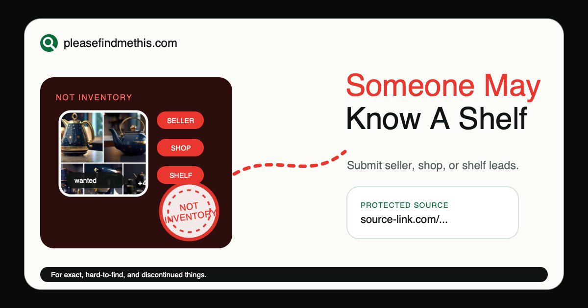
Offline possibility: a source may be outside indexed listings.
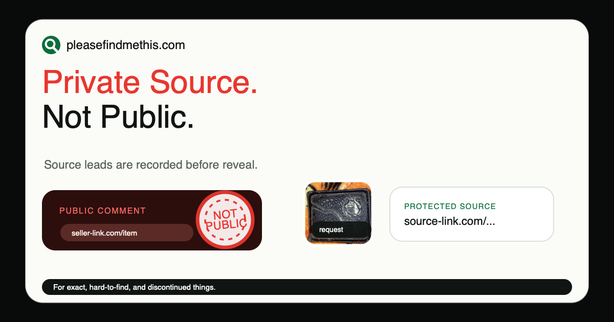
Finder protection: useful leads should not be posted openly.
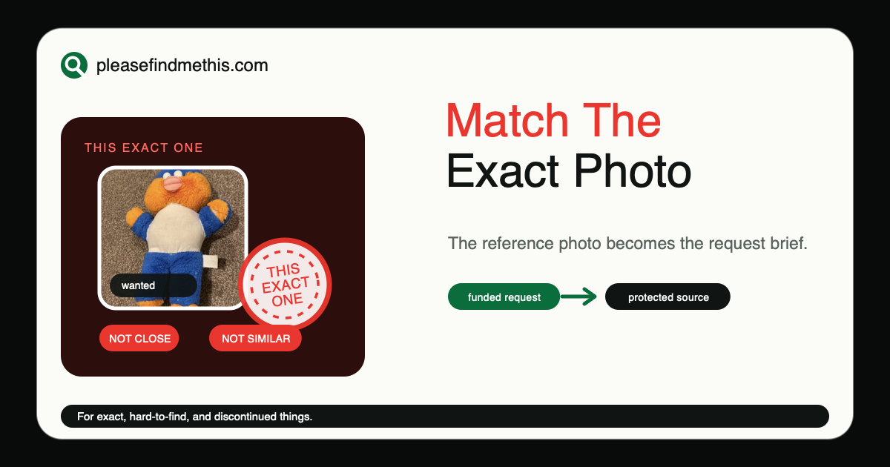
Specificity: the photo clarifies what normal search misses.
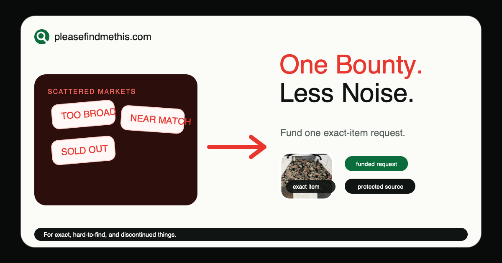
Fragmentation relief: one request replaces noisy searching.
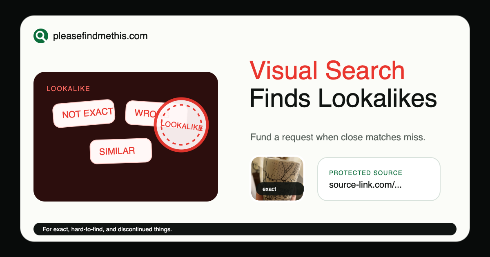
People already tried image search and still need the exact thing.
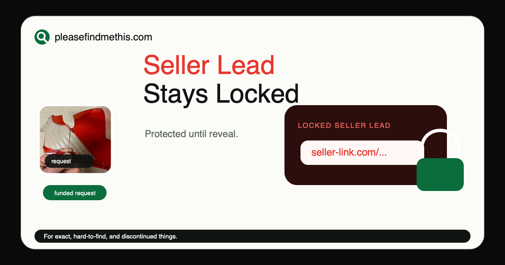
Trust wedge: source info should not be exposed too early.
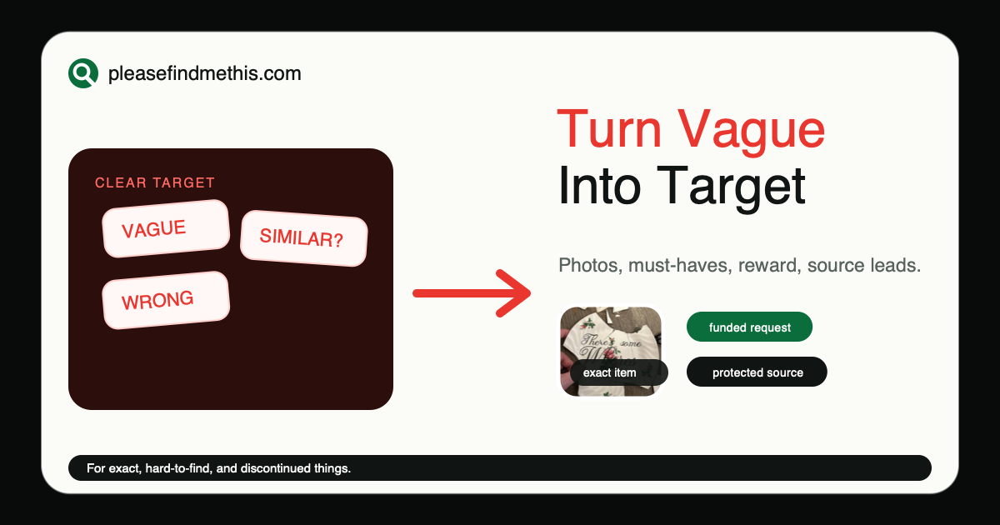
Clarity relief: a messy search becomes a precise bounty.
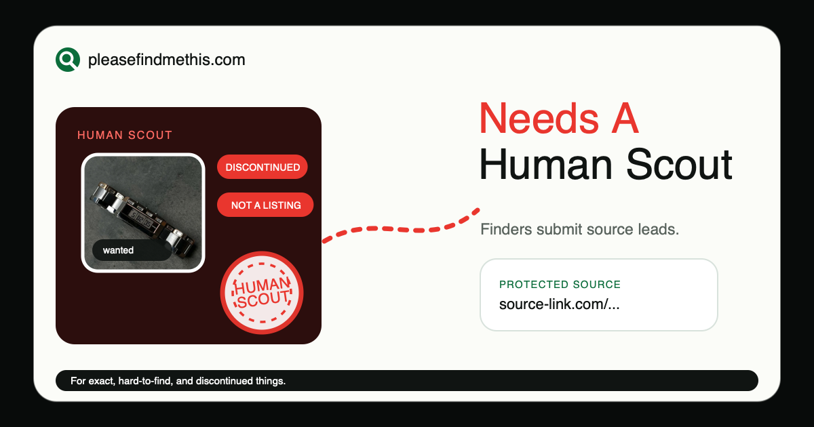
Human knowledge beats generic listings for discontinued items.
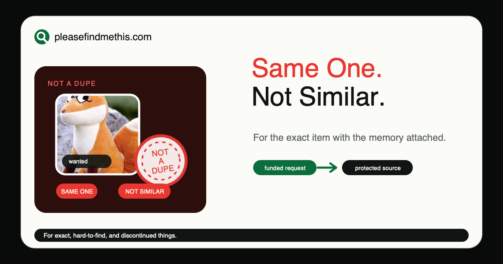
Sentimental precision: near matches are emotionally wrong.
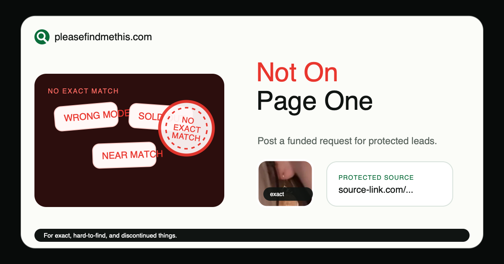
The obvious search already failed.
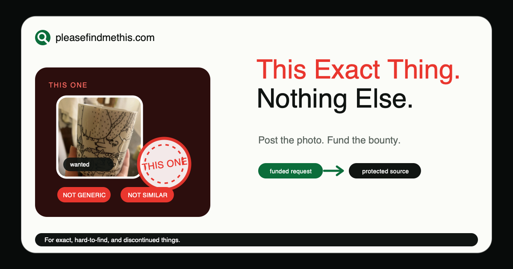
Pattern interrupt: the eye locks onto one specific object.
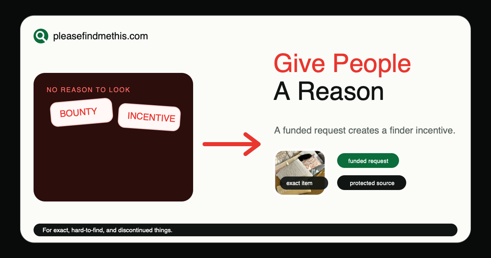
Incentive shift: a bounty turns passive waiting into a prompt.